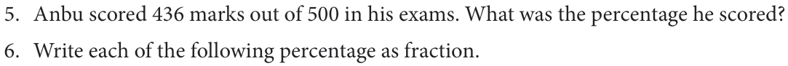

- In each of the following grid, find the number of coloured squares and express it as a fraction, decimal and percentage.
- (ii) (iii) (iv) (v)
- A picture of chess board is given. (i) Find the percentage of the white coloured squares. (ii) Find the percentage of grey coloured squares.
- Find the percentage of the squares that have the pieces and
- The squares that do not have the pieces.
- A picture of dart board is given. Find the percentage of white coloured portion and black coloured portion.
- Write each of the following fraction as percentage.
- \(2 \frac{36}{50}\) (v) \(1 \frac{30}{5} \frac{81}{3} \frac{42}{56}\)

- 21% (ii) 93.1% (iii) 151% (iv) 65% (v) 0.64%
- Iniyan bought 5 dozen eggs. Out of that 5 dozen eggs, 10 eggs are rotten. Express the number of good eggs as percentage.
- In an election, Candidate X secured 48% of votes. What fraction will represent his votes?
- Ranjith's total income was ₹ 7,500. He saved 25% of his total income. Find the amount
saved by him.
Objective type Questions
- Thendral saved one fourth of her salary. Her savings percentage is
- 34 % (ii) \(\frac{1}{4}\) % (iii) 25% (iv) 1%
- Kavin scored 15 out of 25 in a test. The percentage of his marks is
- 60% (ii) 15% (iii) 25% (iv) 15/25
- 0.07% is
- \(\frac{7}{10}\) (ii) \(\frac{7}{100}\) (iii) \(\frac{7}{1000}\) (iv) \(\frac{7}{10,000}\)